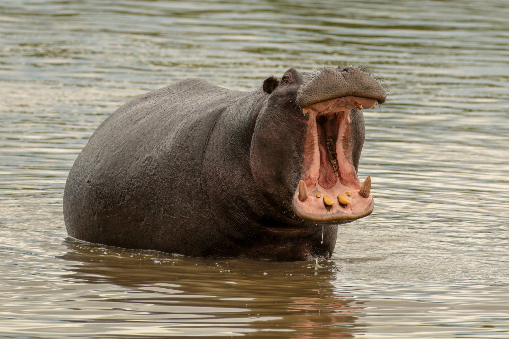
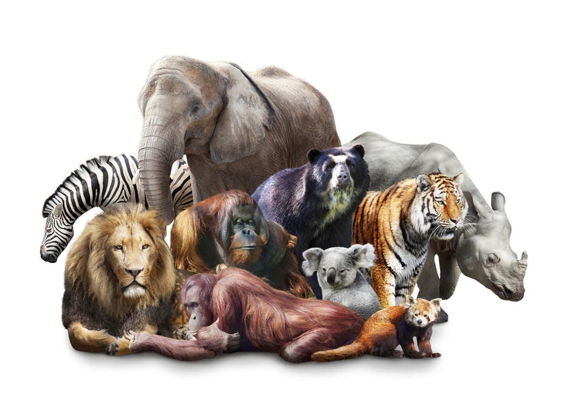
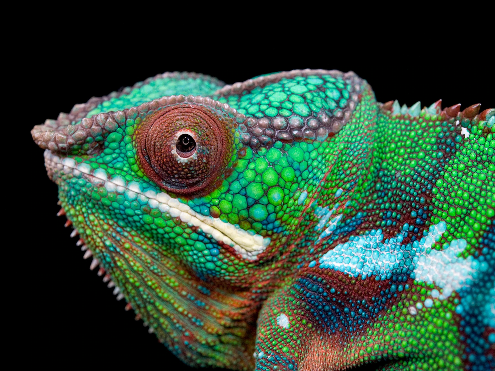
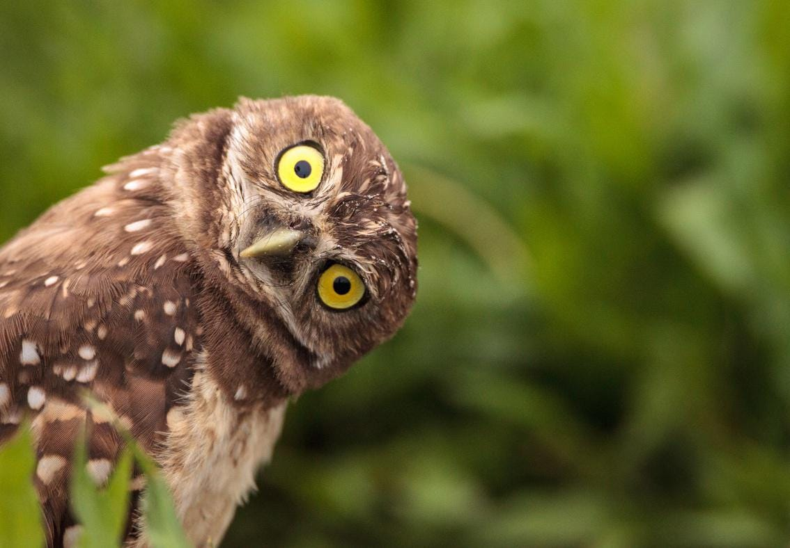
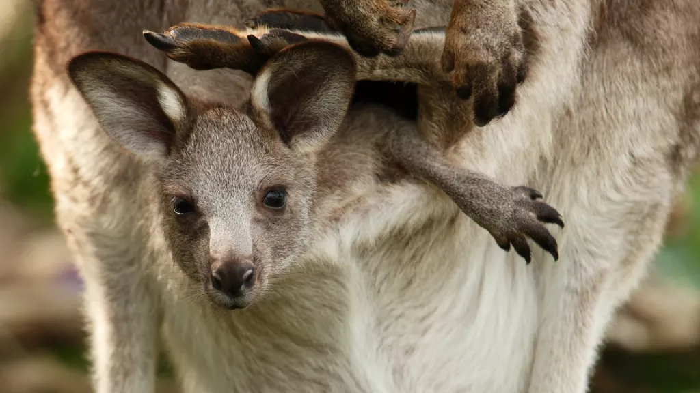
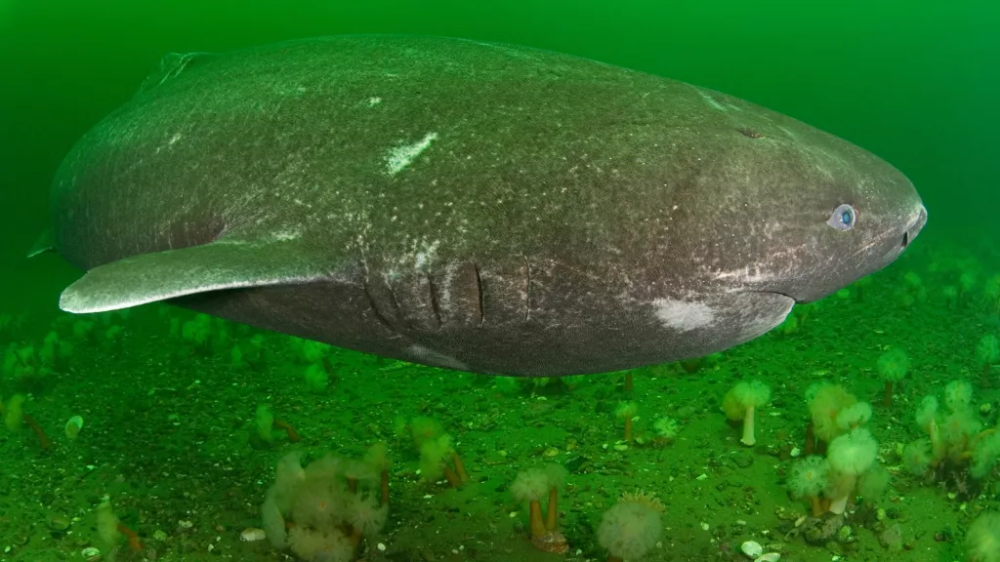
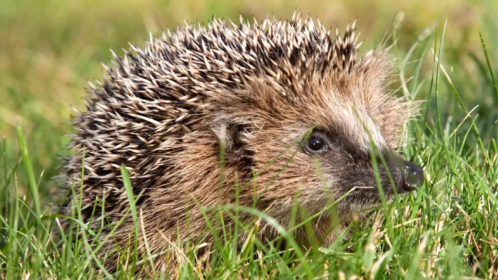

Hippopotamus Teeth: Everything You Need to Know
The largest canines in a hippopotamus’ mouth are commonly called tusk. This is similar to an elephant’s tusk and is in fact, made of the same material. The hippopotamus tusk or canines have ivory resting under layers of dentin and enamel, the same white material that makes up an elephant’s prominent tusk.
This ivory is a very expensive, popular material that is hunted and poached by many. Hippopotamus ivory is more difficult to carve than elephant ivory, but it is denser and less vulnerable to wear. That is why huge populations of hippos are hunted down for their tusks. During the 18th century, hippopotamus tusks were widely used to construct dentures and to substitute individual teeth.
Read More

What Are Mammals: Explained
The official mammal class is Mammalia. Types of animals that are mammals include warm-blooded vertebrates that have hair or fur and whose babies drink milk. Unlike other animal types like birds and insects, all mammal babies drink milk that comes from their mother’s bodies. This is one of the key ways to know if an animal is a mammal.
Members of this birth group have a birth procedure containing a placenta. The presence of a placenta transfers important nutrients between the mother and offspring, helping protect the young and ensure a well-developed birth. Placental births are the most common among all mammals with examples including dogs, horses, cats, and humans.
Read More

Reptiles: Different Types, Definition, Photos, and More
Lizards, dinosaurs, crocodiles, turtles, and snakes – all belong to that ancient and stout class of animals known as the reptiles. This is a diverse group with more than 10,000 different species and a huge representation in the fossil record. Once the dominant land vertebrates on the planet, reptiles still occupy just about every single ecosystem outside of the extreme north and south.
More than anything else, reptile is an evolutionary classification. Every species within this class shares a common ancestor that dates back more than 300 million years. But it also shares a common set of characteristics. At a basic level, all reptiles have four legs, or are descended from creatures with four legs (including snakes, which still apparently carry some of the genes for making legs). They are also vertebrates with a backbone to house the spinal cord. In addition, most reptiles share the following characteristics:
Read More

Fish: Different Types, Definition, Photos, and More
Fish are aquatic vertebrates. They usually have gills, paired fins, a long body covered with scales, and tend to be cold-blooded. “Fish” is a term used to refer to lampreys, sharks, coelacanths and ray-finned fishes, but is not a taxonomic group, which is a clade or group containing a common ancestor and all its descendants. Instead, there are 3 main classes, groups or types of fish: bony fish (Osteichthyes), jawless fish (Agnatha) and cartilaginous fish (Chondrichthyes). Fish are the most diverse group among the vertebrates, with over 33,000 different types of fish species.
Read More

Birds: Different Types, Definition, Photos, and More
Birds, members of the class Aves, include more than 10,400 living species. Their feathers distinguish them from all other classes of animal; no other animals on earth have them. If you see an animal with feathers, it’s undoubtedly a bird. Like mammals, birds are warm-blooded vertebrates with four-chambered hearts. However, they are more closely related to reptiles and are believed to have evolved from dinosaurs. Their forelimbs have been modified into wings over many millions of years of evolution, they lay hard-shelled eggs and they have exceptional vision – the most acute of their senses. Most birds are diurnal, meaning they sleep at night. Most can fly, but flightless species exist.
Read More
Insects
All insects are part of the taxonomical phylum Arthropoda, and they are collectively referred to as arthropods. It is common to see this name misspelled as “anthropod,” but this is not the correct term. They can be found in nearly every environment on the planet, and they currently account for over half of all known living organisms in the world. They have undergone many cycles of evolution depending on the resources available to them. With over one million described species currently living, and millions more estimated to exist, insects greatly outnumber all other animals.
Read More

What's it like inside a kangaroo pouch?
Although many marsupials raise their young in pouches — including opossums, Tasmanian devils and even koalas — kangaroos are almost certainly the most iconic.
So what's it like inside a kangaroo's pouch?
Think of the kangaroo's pouch as a hoodie sweatshirt put on backwards, said Rick Schwartz, an animal care supervisor and national spokesperson at the San Diego Zoo. The hood of the sweatshirt is the pouch, and the drawstrings are the mother's muscles she uses to open and close it. "It does open up quite a bit if she wants it to," Schwartz told Live Science.
Read More

Greenland sharks: Toxic, half-blind giants of the ocean
Greenland sharks (Somniosus microcephalus) are the longest-living animals with a backbone, and survive for up to hundreds of years in the deep, cold waters of the Arctic and North Atlantic oceans. Greenland sharks belong to a family called sleeper sharks, which move slowly and stealthily through the water.
These sharks sneak up on live prey and scavenge a variety of dead animals, including other sharks, seals, drowned horses and polar bears. Greenland sharks rarely encounter humans and scientists still have much to learn about their lifestyles.
Read More
Dogs can differentiate between familiar and unfamiliar human languages
If you were to move to a new country with a different language and bring along the family dog, your pet would likely have a hard time understanding commands from the locals, according to a new study looking at how dogs' brains react to different languages.
MRI scans revealed that dogs' brains can distinguish between familiar and unfamiliar languages, making them the first-known, and so far only, non-human animals to be able to tell the difference between human languages.
Read More

Drug-resistant superbug lived on hedgehogs long before we used antibiotics
An evolutionary battle between fungi and bacteria on hedgehogs' skin gave rise to a type of antibiotic-resistant bacteria long before humans started using the antibiotics that were thought to lead to such superbugs, a new study reveals.
Researchers traced some lineages of the superbug MRSA, or methicillin-resistant Staphylococcus aureus, to a parasitic fungus found on the skin of European hedgehogs (Erinaceus europaeus). The fungus secretes antibiotics to fight and kill Staphylococcus aureus bacteria (also found on hedgehogs); to stay alive, the bacteria, in turn, evolved antibiotic resistance that later crossed into livestock and humans, the research team reported in a new study.
Read More

Unique tree-climbing lions roar again in Uganda (Op-Ed)
Just six months have passed since the killing and mutilation of six lions in the Ishasha sector of Uganda's Queen Elizabeth National Park (QENP).
If you were to visit the park, you would see these so-called Ishasha lions lazing around in the myriad branches of towering fig trees. This group is one of only two populations of lions known to climb trees, making the majestic beasts fascinating subjects for study and a popular tourist attraction. Sadly, however, these lions face numerous threats, including habitat loss, snaring, human-wildlife conflict, illegal wildlife trade and the trafficking of lion body parts.
Read More

These birds have been singing the same songs for literally a million years
A million years ago, the soundtrack of the "sky island" mountains of East Africa may have been very similar to what it is today. That's because a group of tiny, colorful birds has been singing the exact same tunes for more than 500,000 years — and maybe as long as 1 million years, according to a new study.
Sunbirds in the family Nectariniidae are colorful, tiny,
Read More